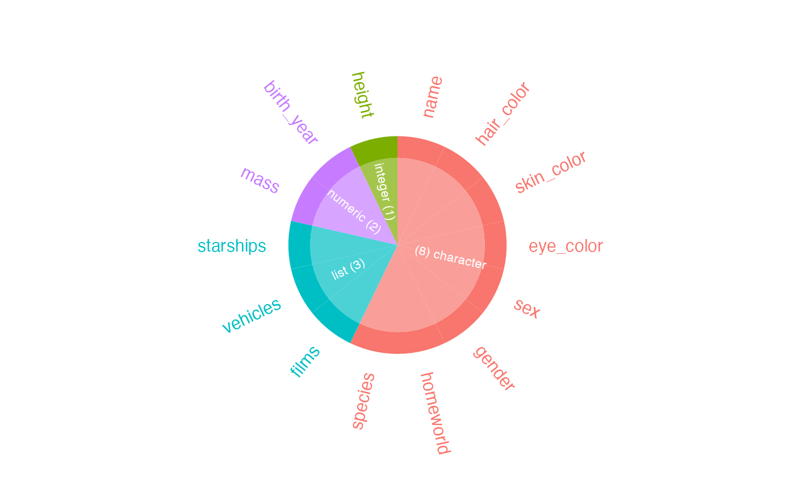
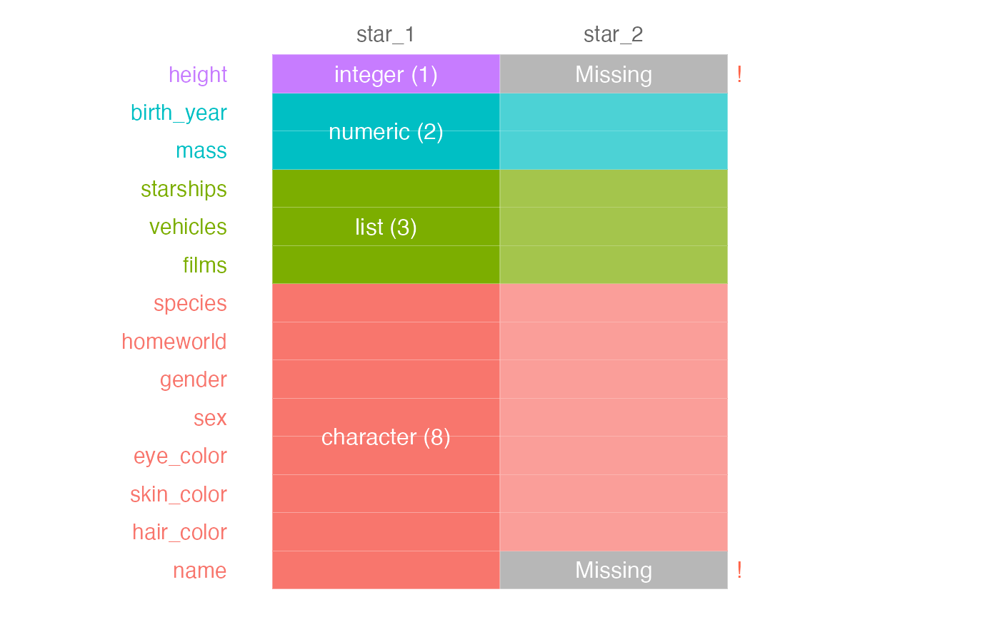

vignettes/pkgdown/inspect_types_examples.Rmd
inspect_types_examples.Rmdstarwars
The examples below make use of the starwars and storms data from the dplyr package
For illustrating comparisons of dataframes, use the starwars data and produce two new dataframes star_1 and star_2 that randomly sample the rows of the original and drop a couple of columns.
inspect_types() for a single dataframeTo explore the column types in a data frame, use the function inspect_types(). The command returns a tibble summarising the counts and percentages of columns with particular types.
library(inspectdf) # return tibble showing columns types inspect_types(starwars)
## # A tibble: 4 x 4
## type cnt pcnt col_name
## <chr> <int> <dbl> <named list>
## 1 character 8 57.1 <chr [8]>
## 2 list 3 21.4 <chr [3]>
## 3 numeric 2 14.3 <chr [2]>
## 4 integer 1 7.14 <chr [1]>A barplot can be produced by passing the result to show_plot():
# print visualisation of column types inspect_types(starwars) %>% show_plot()

inspect_types() for two dataframesWhen a second dataframe is provided, inspect_types() will create a dataframe comparing the count and percentage of each column type for each of the input dataframes. The summaries for the first and second dataframes are show in columns with names appended with _1 and _2, respectively.
inspect_types(star_1, star_2)
## # A tibble: 4 x 5
## type cnt_1 pcnt_1 cnt_2 pcnt_2
## <chr> <int> <dbl> <int> <dbl>
## 1 character 8 57.1 7 58.3
## 2 list 3 21.4 3 25
## 3 numeric 2 14.3 2 16.7
## 4 integer 1 7.14 0 0# print visualisation of column type comparison inspect_types(star_1, star_2) %>% show_plot()
